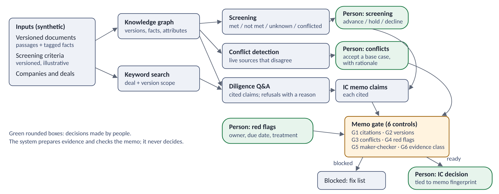

Deal intelligence: from screening to an evidence-backed IC memo
Product case study – personal prototype
Live dashboard Code PDF (4 pages)
Synthetic companies, documents and figures. Illustrative screening criteria and policies. Not connected to, or based on, any firm's systems or processes. The system prepares evidence; people make every decision.
- Deal
- One synthetic deal, Project Larkspur (fleet-maintenance software)
- Workflow
- Screening → cited diligence Q&A → source conflicts → six-control memo gate → human IC decision
- Held-out results
- 4/10, 6/8 and 7/10 on three runs – reported separately, never combined
- Value Assumption
- 7.3–90.5 analyst hours saved per deal, base case 37.0 – assumed, not measured
WorkflowHuman decisionAssumption or open itemBlocker
1. The problem and the users
Proposition: one workflow that makes evidence, source conflicts, owners and approvals traceable before an investment committee (IC) decides.
Problem hypothesis behind it (not an established industry finding): some of the most expensive late surprises in a deal come from evidence problems rather than missing analysis – a figure in the IC memo nobody can trace, two adviser reports that quietly disagree, or a red flag with no owner.
| User | Where they lose time or confidence | What they need |
|---|---|---|
| Deal team | Finding which document says what; reconciling management, adviser and analysis figures; re-checking citations before IC | Cited answers, conflicts surfaced early, a memo assembled from sourced claims |
| Investment committee | Cannot tell a sourced fact from a management claim or an expert-call rumour; sees one number where sources disagree | Every claim traceable; disagreements and the chosen basis visible; open risks owned |
| Operating / value-creation team | Inherits red flags and assumptions after closing without the evidence behind them | Owned red flags with treatment and source, ready for the 100-day plan |
2. The v1 workflow and the choices behind it
One synthetic deal, Project Larkspur (fleet-maintenance software), moves through one workflow:
- Step 1 Screening against configurable criteria: each criterion MET, NOT MET, UNKNOWN or CONFLICTED with its source; no composite score; a conflicted criterion is never treated as passed; Human decision a person records the decision to advance.
- Step 2 Evidence changes: the restated memorandum (revenue EUR 92m to 88m) and later adviser reports, version by version.
- Step 3 Diligence Q&A: every claim cites a passage; disagreements are shown, never resolved by the system; questions about other companies are refused with a reason.
- Step 4 Conflicts: recurring revenue 80% vs 71%, adjusted EBITDA EUR 24m vs 21.5m, and net revenue retention (NRR) 112% vs 104%. Human decision a named person accepts a base case with a rationale; Open item the conflict stays visible.
- Step 5 IC memo gate – six controls on the memo, separate from the screening criteria: citations, no replaced versions, decisions on conflicted facts, owned red flags, maker-checker, expert-call-only claims labelled as unverified leads. Blocker any failed control stops the memo (Project Osier fails four).
- Human decision IC decision, recorded against the exact memo version; any later edit makes it stale.
Not in v1: sourcing feeds and CRM, automated extraction, embeddings, model-first answers – why each was left out is explained below.
Passing the gate means the memo's evidence is in order, not that the deal meets the criteria. Larkspur passes all six controls, yet on the accepted base case NRR is 104%, below the illustrative 105% criterion Open item. The synthetic IC chair records Human decision PROCEED to confirmatory diligence: the shortfall is priced in, with three conditions – a change-of-control waiver from the largest customer, valuation on EUR 21.5m EBITDA and 104% NRR, and a customer call on a possible 2027 re-tender. The threshold informs judgement; it does not decide the outcome.
Left out of v1, deliberately: sourcing feeds and CRM (trust in the evidence trail first); automated extraction (facts are hand-tagged so the workflow can be judged on its own); embeddings (keyword search is explainable – the held-out misses are the trigger to test them); model-first answers (the deterministic mode is the default).
3. Roadmap and how competing requests are decided
| Phase | Scope | User problem |
|---|---|---|
| Now (v1) | Screening with evidence, cited Q&A, conflicts and versions, memo gate, recorded IC decision | "I can't trace this number" / "we missed that two reports disagree" |
| Next | Address the observed misses and evaluate the fixes on a new, unseen set; gated memo export; extraction with human confirmation; access control; red flags into the 100-day plan | Manual tagging; IC-pack preparation; hand-off to the operating team |
| Later | Sourcing signals and CRM; licensed comparables; portfolio monitoring against the IC case | Finding targets; checking the investment case after closing |
Worked example: gated memo export is sequenced first in Next (speed without weakening the evidence standard); the 100-day plan feed follows it.
4. Evaluation and value
Development and held-out results are reported separately, per run and per question; each held-out run was run once on a frozen build. Prototype evaluation, not investment-grade validation.
| Measure | Development (30) | Run 1 (10) | Run 2 (8) | Run 3 (10) |
|---|---|---|---|---|
| Question authorship | with the rules | AI-drafted, owner-reviewed | AI assistant, no code access | drafted from the source documents; labels reviewed by me before the run; not used to tune the implementation before it |
| Correct outcome | 30/30 | 4/10 | 6/8 | 7/10 |
| Citations resolving to a real passage | 41/41 | 12/12 | 12/12 | 11/11 |
| Citations supporting the answer | 19/19 | 2/6 | 4/6 | 2/6 |
| Conflicts shown | 6/6 | 0/2 | 1/2 | 2/2 |
Development (30)
Questions written with the rules
Correct outcome 30/30 · citations resolving 41/41 · supporting 19/19 · conflicts 6/6
Held-out run 1 (10)
AI-drafted, owner-reviewed
Correct outcome 4/10 · citations resolving 12/12 · supporting 2/6 · conflicts 0/2
Held-out run 2 (8)
AI assistant, no code access
Correct outcome 6/8 · citations resolving 12/12 · supporting 4/6 · conflicts 1/2
Held-out run 3 (10)
Drafted from the source documents; labels reviewed by me before the run; not used to tune the implementation before it
Correct outcome 7/10 · citations resolving 11/11 · supporting 2/6 · conflicts 2/2
Detail by run
Held-out run 1 – 4/10: six misses, five causes
The first held-out result exposed the gap: the development score measured rules against questions written alongside them.
- Answered a different question: "revenue contracted to renew next year" returned total FY2025 revenue – the qualifier was ignored.
- Over-claim from one expert call: "what share of customers would accept 6%" was answered from one interview.
- Conflict check skipped (two questions): retention and recurring-revenue questions went to passage search and came back as single answers.
- Vocabulary: "updated CIM" was not read as a version question.
- Paraphrase: "levers for growing the business" did not match "plans" and "growth".
Held-out run 2 – 6/8: three issues
- False conflict: generic words ("year", "end", "net") matched a retention passage for a working-capital question.
- Missed conflict: a retention question with extra wording was declined instead of showing both figures.
- Unsupported citation: right outcome, but the cited explanation was about revenue, not the recurring-revenue share.
Held-out run 3 – 7/10: four misses
- Right outcome, wrong answer: asked what the biggest customer can do on a change of ownership, it returned that customer's 9% revenue share – caused by a fix made after run 2. Now covered by a targeted fix and regression tests.
- Paraphrase: "scale of work and spend to bring the code up to date" did not reach the remediation passage.
- Vocabulary: "sales" was not read as revenue, so the version history was not consulted.
- Over-answer: a hypothetical recalculation returned the existing conflict instead of a refusal.
Each cause has since been addressed and checked only in development tests; the fixes still need validation on a new held-out set, and the held-out scores stand as run.
Model mode (development set only) – 28/30, then 29/30 after a conflict guard
gpt-5.4-mini phrasing answers only from retrieved passages, USD 0.023 for 25 calls: every citation valid and every refusal correct, but it flattened two conflicts. The conflict check is now deterministic and cannot be overridden; the re-run showed 6/6 conflicts. The deterministic mode stays the default.
Assumption Value – assumed, not measured: 7.3 / 37.0 / 90.5 analyst hours saved per deal (low / base / high), or 88 / 444 / 1,086 hours a year at an assumed 12 deals in diligence. Measured alongside: time to evidence, citation support, conflicts unresolved at IC, correction effort, adoption.
5. Architecture (data flow) and limitations
People make every decision (green boxes): screening, conflict acceptance, red-flag ownership and the IC decision. The system prepares evidence and checks the memo against six controls.
System step (blue)Human decision (green)Memo gate (amber)

Text description of the diagram
- Synthetic inputs – versioned documents with tagged facts, screening criteria, companies and deals – feed a knowledge graph and a keyword search scoped to the deal.
- The graph drives screening and conflict detection; search and the graph drive diligence Q&A with cited claims and reasoned refusals.
- People decide at four points: the screening decision; accepting a conflict's base case with a rationale; each red flag's owner, due date and treatment; and the IC decision.
- Cited memo claims, the conflict decisions and the red flags go through the memo gate's six controls. A failed control returns a fix list; a passed memo goes to the human IC decision, recorded against the memo's fingerprint.
- Facts are hand-tagged; real use needs extraction with human confirmation and a measured error rate.
- Keyword retrieval with a small synonym list; paraphrase in general is untested beyond the held-out runs.
- Synthetic roles stand in for people, access control and information barriers; criteria and controls would be set by the investment team.
- A Codex-assisted repository review against a definition-of-done list identified a memo-gate bypass and an outdated dashboard; both were fixed and re-checked, and a clean clone passed all 87 tests. I reviewed the case study, and run 3's questions and labels, against the source documents.